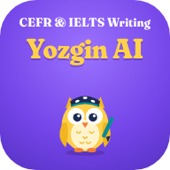

Yozgin AIIELTS Writing tekshirish onlayn: Task 1 va Task 2
IELTS Writing'ni onlayn tekshiring: Task 1 (Academic grafik va diagrammalar yoki General Training xati) va Task 2 (esse). Matningizni yozasiz yoki daftar rasmini yuklaysiz, sun'iy intellekt (AI) uni IELTS'ning 4 ta mezoni bo'yicha baholaydi va xatolarni o'zbekcha tushuntiradi.
Platformada nimalar bor
- Task 1 Academic: 48 ta savol: line graph, bar chart, pie chart, table, process va map. Har birida namuna javob va manba ko'rsatilgan.
- Task 1 General Training: 40 ta xat (formal, semi-formal, informal).
- Task 2 esse: 58 ta savol: opinion, discussion, advantages and disadvantages, problem and solution.
- Mock testlar: 60 daqiqalik to'liq imtihon (Task 1 + Task 2), oxirida umumiy Writing bandi.
- Rasm bilan tekshirish: qo'lda yozilgan matn yoki topshiriq (grafik) rasmini yuklang, AI o'zi o'qiydi.
- Darslar: Band 4 dan Band 9 gacha, qadamma-qadam xarita.
IELTS Writing bandi qanday hisoblanadi
Har bir topshiriq 4 mezon bo'yicha baholanadi: Task Achievement (Task 2 da Task Response), Coherence and Cohesion, Lexical Resource va Grammatical Range and Accuracy. Task 2 Task 1 dan ikki baravar muhim:
Writing ≈ (Task 1 + 2 × Task 2) ÷ 3, yarim bandgacha yaxlitlanadi. Masalan, Task 1 = 6 va Task 2 = 7 bo'lsa, Writing ≈ 6.5.
Overall (umumiy) IELTS bali esa Listening, Reading, Writing va Speaking'ning o'rtachasi. Shuning uchun Overall 7.5 bo'lsa ham Writing 6 bo'lishi mumkin.
Yangi alifboda qisqacha
IELTS Writing'ni onlayn tekşiring: Task 1 va Task 2. AI ball beradi, xatolarni özbekça tuşuntiradi. Namuna javoblar, mock testlar va qadamma-qadam darslar bor. Bepul.
Platformada qanday tekshiriladi
- Platformani oching va imtihonni tanlang: IELTS (Academic yoki General Training).
- Topshiriqni tanlang. Har birida savol, namuna javob va foydali iboralar bor.
- Javobingizni yozing yoki daftardagi matn rasmini yuklang. So'zlar soni avtomatik sanaladi.
- Tekshirish tugmasini bosing. AI mezonlar bo'yicha ball beradi va xatolarni matnning o'zida belgilaydi.
- Izohlarni o'qib, matnni tuzating va qayta tekshiring. Har bir urinish saqlanadi, o'sishingizni ko'rasiz.
4 ta mezon batafsil
| Mezon | Nimaga qaraladi |
|---|---|
| Task Achievement / Task Response | Savolning hamma qismiga javob berilganmi, Task 1 da overview bormi, Task 2 da pozitsiya aniqmi. |
| Coherence and Cohesion | Abzatslar mantiqiy tartibdami, har birida bitta asosiy fikr bormi, bog'lovchilar o'rinlimi. |
| Lexical Resource | So'zlar aniq va xilma-xilmi, takrorlar kammi, imlo to'g'rimi. |
| Grammatical Range and Accuracy | Oddiy va murakkab gaplar aralashganmi, xatolar ma'noni buzmayaptimi. |
Band 6 dan Band 7 ga chiqish uchun 7 ta maslahat
- Task 2 da pozitsiyangizni kirishda aniq ayting va xulosagacha o'zgartirmang.
- Har bir asosiy abzatsni bitta asosiy gap bilan boshlang, keyin tushuntirish va misol keltiring.
- Task 1 da overview yozing: eng katta tendensiya yoki farq.
- Bog'lovchilarni har gapga qo'ymang: ortiqchasi Coherence bahosini tushiradi.
- Mavzuga oid so'z birikmalarini o'rganing (raise awareness, have a negative impact on).
- Shart gaplar, nisbiy gaplar (which, who) va passivni o'rinli ishlating.
- Yozib bo'lgach 3-4 daqiqa ajratib, artikllar, ko'plik va zamonlarni tekshiring.
Rasm orqali tekshirish uchun maslahatlar
- Varaqni yorug' joyda, tekis qilib, yuqoridan rasmga oling.
- Rasmda butun matn ko'rinsin, chetlari kesilmasin.
- Qo'l yozuvi aniq bo'lsin: AI o'qigan matnni tekshirishdan oldin ko'rsatadi, xato o'qilgan so'zni tuzatib olishingiz mumkin.
- Task 1 grafigi rasmini ham yuklasangiz, AI javobingizni grafik ma'lumotlari bilan solishtiradi.
Savol-javob
IELTS Writing'ni qanday tekshirsa bo'ladi?
Platformada Task 1 yoki Task 2 ni tanlang, javobingizni yozing yoki rasmini yuklang va Tekshirish tugmasini bosing. AI band, mezonlar bo'yicha baho va xatolarning o'zbekcha izohini beradi.
Task 1 da 5 oldim, bu nima degani?
Bu faqat Task 1 bandi. Rasmiy natijada Task 1 va Task 2 alohida yozilmaydi: Writing ≈ (Task 1 + 2 × Task 2) ÷ 3. Platforma har bir bandning ma'nosini va keyingi bandga chiqish uchun qaysi mezonni ko'tarish kerakligini ko'rsatadi.
Bu rasmiy IELTS bahosimi?
Yo'q. Bu IELTS uslubidagi mashq bahosi. Platforma IELTS tashkilotlari bilan bog'liq emas.
Pullikmi?
Yo'q, platforma bepul.
AI qanchalik aniq baholaydi?
AI IELTS'ning ochiq e'lon qilingan mezonlariga tayanadi va har bir bahoni izohlaydi. Lekin bu mashq bahosi: rasmiy natija imtihonchi tomonidan beriladi.
Bir matnni necha marta tekshirsa bo'ladi?
Tuzatib, qayta tekshirishingiz mumkin. Har bir urinish saqlanadi va bandingiz qanday o'zgarganini ko'rasiz.
Muallif: Sayyora Soleyeva, Samarqand davlat chet tillar instituti magistranti. Aloqa: soleyevasayyora7@gmail.com, Telegram @Sayyora_Sunnatilloyevna. Ballar mashq uchun taxminiy, rasmiy natija emas.